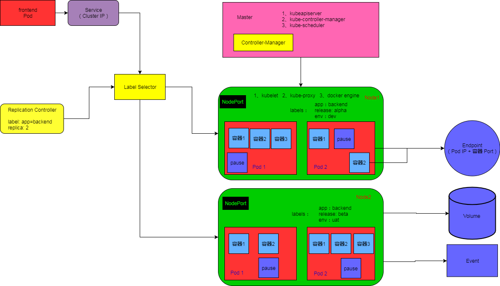

Kubernetes是基于容器技术，目的是实现资源动态管理，以及跨多个数据中心的资源利用率的最大化的分布式架构方案。如果我们的系统设计遵循k8s的设计思想，那么传统系统架构中那些和业务没有多大关系的底层代码和功能模块，都可以统统不用考虑，我们不必在头疼于服务监控、故障处理等模块的开发，使用k8s提供的解决方案，我们可以节省大量的开发成本，降低系统运维的难度。
k8s具有完备的集群管理能力，支持多层次的安全防护和准入机制、多租户应用支撑能力、透明的服务发现和注册机制、内建的负载均衡器、故障发现和自我修复、服务滚动升级和在线自动扩容、可扩展的资源自动调度机制、以及多粒度的资源配额管理能力。
在介绍k8s基础知识前，我们先来看下k8s基础组件图，然后我们参考着图一起来讲解。

Master
Master是整个k8s集群的控制节点，负责整个集群的管理和控制，基本上所有的控制命令都需要发给它，由它来负责具体的执行过程，因此Master节点非常重要，建议使用独立的服务器来部署，高可用部署建议用3台服务器。
Master节点上运行着3个重要的进程：
- kube-apiserver：提供Http Rest接口的服务进程，是k8s里所有资源增、删、改、查等操作的唯一入口，也是集群控制的入口进程。
- kube-controller-manager：k8s里面所有资源对象的自动化控制中心。
- kube-schedule：负责资源调度(Pod调度)的进程。
另外，Master节点上还需要启动一个etcd服务，因为k8s里所有资源对象的数据全部都是保存在etcd里面的。
Node
除了Master节点以外，k8s集群里的其他机器被称为Node节点，每个Node节点都会被Master节点分配一些工作负载(docker容器),当某个Node节点宕机时，其上的工作负载会被Master自动转移到其他Node节点上去。
每个Node节点上同样运行着一组重要进程：
- kubelet：负责Pod对应的容器的创建、启停等任务，同时与Master节点密切协作，实现集群管理的基本功能。
- kube-proxy：实现k8s Service的通信与负载均衡机制的重要组件。
- Docker Engine：docker引擎，负责本机docker容器的创建和管理工作。
Node节点可以在运行期间动态添加到k8s集群中，前提是该节点正确启动了上述进程。默认情况下，kubelet会向Master节点注册自己，然后kubelet会定时的向Master节点汇报自身的情报信息，例如：操作系统版本、docker版本、机器CPU内存情况、以及当前有哪些Pod在运行。这样Master便会知道每个Node节点的资源使用情况，并实现高效均衡的资源调度策略。如果某个Node节点超过指定时间没有上报信息，会被Master节点判定为”失联”，该Node节点状态将会被标记为不可用(Not Ready),随后，Master会触发相应的自动流程，将不可用的Node节点上的工作负载转移到其他Node节点上。Service
Service是k8s的核心，它其实就是微服务架构中的一个”微服务”，每个Service对象都有如下特征： - 拥有一个唯一指定的名称(比如mysql-server)
- 拥有一个虚拟IP(Cluster IP、Service IP 或 VIP，由k8s分配)和端口号(服务的访问入口地址)
- 能够提供某种远程服务能力
- 被映射到了提供这种服务能力的一组容器应用上
Service的服务进程目前都基于Socket通信方式对外提供服务，比如Redis、Mysql、Tomcat，或者是实现了某个具体业务的一个特定的Tcp Server进程，虽然一个Service通常由多个相关的服务进程来提供服务，每个服务进程都有一个独立的Endpoint(IP + Port)访问点(例如Tomcat有服务端口和管理端口)，但k8s能够让我们通过Service(Cluster IP + Service Port)连接到指定的Service上，通过k8s内建的透明负载均衡和故障恢复机制，不管后端有多少服务进程，也不管某个服务进程是否会由于发生故障而重新部署到其他机器上，都不会影响到我们对服务的正常调用，更重要的是这个Service一旦创建成功，就不会在发生变化，这意味着，在k8s集群中，我们再也不用为了服务的IP地址变来变去的问题而头疼了。
通过上图，我们可以看到，前端应用Pod通过Service的入口地址，访问到了该Service背后一组由Pod副本组成的集群实例。Service是通过Label Select标签选择器机制与其后端Pod副本集群关联起来的，而ReplicationController的作用实际上是保证Service的服务能力和服务质量始终处于预期的标准(根据ReplicationController的副本数量配置，k8s会保证启动相应副本数的容器)
Pod
容器提供了强大隔离功能，k8s为了实现Service服务隔离设计了Pod对象，将每个服务进程包装到相应的Pod中，使其成为Pod中运行的一个容器，为了建立Service和Pod的关联关系，k8s首先给每个Pod贴上一个标签(Label),例如给运行Mysql的Pod贴上name=mysql标签，给运行redis的Pod贴上name=redis的标签，然后给相应的Service定义标签选择器(Label Selector)，比如Redis集群Service的标签选择器的选择条件为name=redis，那么该Redis集群Service将会作用于所有包含name=redis标签的Pod上,这样一来，就解决了Service和Pod的关联问题。
通过上图，我们可以看到Pod运行在Node节点上，通常每个Node节点上可以运行几百个Pod，而且运行一个被称为”根容器”的Pause容器。因为在一组容器作为一个单元的情况下，我们很难对一个”整体”进行简单的判断，例如，一个容器挂掉了，那么此时算是整体死亡吗？是N/M的死亡率吗？引入业务无关且不易挂掉的Pause容器作为Pod的根容器，以它的状态代表整个容器组的状态，就简单的解决了这个问题。另外，Pod里的多个业务容器共享Pause容器的IP，共享Pause容器挂接的Volume，这样即简化了密切关联的业务容器之间的通信问题，也很好的解决了它们之间的文件共享问题。
k8s为每个Pod都分配了一个唯一的Pod IP，一个Pod里的多个容器共享该Pod IP地址，k8s要求底层网络支持集群内任意两个Pod之间的TCP/IP直接通信，这通常采用”虚拟二层网络”技术来实现，例如：Flannel、Open vSwitch等，因此，我们需要牢记一点：在k8s里，一个Pod里的容器与另外主机上的Pod容器能够直接通信。
Pod分为两种类型：普通的Pod和静态的Pod，静态Pod比较特殊，它并不在k8s的etcd中存储，而是存在在某个具体的Node上的一个具体文件中，并且只在此Node上运行，而普通的Pod一旦创建，就会被放入etcd中存储，随后会被k8s的Master调度到某个具体的Node上进行绑定，随后该Pod被对应的Node上的kubelet进程实例化为一组相关的Docker容器并启动起来。在默认情况下，当Pod里的某个容器停止时，k8s会自动检测到这个问题并且重启该Pod(重启Pod里的所有容器)，如果Pod所在的Node宕机，则会将这个Node上的所有Pod重新调度到其他节点上运行。
Pod IP 加上容器的Port，就组成了Endpoint，它代表着此Pod里的一个服务进程的对外通信地址，一个Pod也存在着具有多个Endpoint的情况，比如当我们把Tomcat定义为一个Pod时，可以对外暴露管理端口和服务端口这两个Endpoint.
k8s的Event是一个事件的记录，记录了事件的最早产生时间、最后重现事件、重复次数、发起者、类型，以及导致此事件的原因等众多信息，Event通常会关联到某个具体的资源对象上，是排查故障的重要参考信息。
Service 和 Pod
既然每个Pod都会被分配唯一的Pod IP，而且每个Pod都提供了一个独立的Endpoint(Pod IP + 容器Port)以被客户端访问，现在多个Pod副本就组成了一个集群来提供服务，那么客户端该如何来访问它们呢？
一般的做法是部署一个负载均衡器，为这组Pod开启一个对外的服务端口如8000端口，并且将这些Pod的Endpoint列表加入8000端口的转发列表中，客户端就可以通过负载均衡器的对外IP地址+服务端口来访问此服务了，而客户端的请求最后会被转发到哪个Pod，则由负载均衡器的算法来决定。
k8s也遵循了上述常规做法，运行在每个Node上的kube-proxy进程其实就是一个智能的软件负载均衡器，它负责把对Service的请求转发到后端的某个Pod实例上，并在内部实现服务的负载均衡和回话保持机制。但k8s发明了一种很巧妙的设计：Service不是共用一个负载均衡器的IP地址，而是每个Service被分配了一个全局唯一的虚拟的Cluster IP，这样一来，每个服务就变成了具备唯一IP地址的”通信节点”，服务调用就变成了最基础的TCP网络通信问题。
我们知道Pod的Endpoint地址会随着Pod的销毁和重新创建而发生改变，因此新Pod的IP地址和旧Pod的IP地址不同。而Service的一旦被创建，k8s就会自动为它分配一个可用的Cluster IP，而且在Service的整个生命周期内，它的Cluster IP都不会发生改变，于是服务发现这个问题在k8s的架构里就得以轻松解决：只需要用Service的Name和Service的Cluster IP做一个DNS域名映射就可以完美解决问题。
那么如何实现通过Service的Name来查找对应的Cluster IP呢？
最早以前，k8s采用了Linux环境变量的方式，为每个Service生成一些对应的环境变量，并在每个Pod的容器启动时，自动注入这些环境变量，但是这样使用起来仍然不够直观。后来k8s通过Add-On增值包的方式引入了DNS系统，把Service的Name作为DNS的域名，这样一来，程序就可以直接使用Service的Name来建立通信了。
外部系统访问Service的问题
我们再来看下k8s里面的三种IP：
- Node IP
Node节点的IP，是每个Node节点的物理网卡的IP，这是一个真实存在的物理网络，所有属于这个网络的服务器之间都能通过这个网络直接通信，不管它们中是否有不属于该k8s集群的节点。这也表明，k8s集群之外的节点想要访问k8s集群内的某个节点或者TCP/IP服务时，必须要通过Node IP进行通信。 - Pod IP
Pod IP是每个Pod的IP地址，它是Docker Engine根据docker0网桥的IP地址段进行分配的，通常是一个虚拟的二层网络，前面我们说过，k8s要求位于不同Node上的Pod能够彼此直接通信，所以一个Pod里的容器访问另一个Pod里的容器，就是通过Pod IP所在的虚拟二层网络进行通信的，而真实的TCP/IP流量则是通过Node IP所在的物理网卡流出的。 - Cluster IP
它也是一个虚拟IP，仅作用于k8s的Service对象，并由k8s管理和分配IP地址(来源于Cluster IP地址池)。Cluster IP只能结合Service Port组成一个具体的通信端口，单独的Cluster IP不具备TCP/IP通信基础。
通过上面的说明，我们明白了，Service的Cluster IP属于k8s集群内部的地址，无法在集群外部直接使用这个地址。那么用户该如何访问我们的tomcat-service呢？使用NodePort是解决上述问题最有效的方法。
NodePort的实现方式是：在k8s集群里的每个Node上为需要外部访问的Service开启一个对应的TCP监听端口，外部系统只需要用任意一个Node的IP地址+具体的NodePort端口就可以访问该服务。假如我们配置了NodePort=31002，然后在任意的Node上运行netstat命令，就可以看到有NodePort端口被监听。
Label
一个Label就是一个key=value的键值对，其中key和value由用户自己定义，Label可以附加到各种资源对象上，例如：Node、Pod、Servoce、Replication Controller等，一个资源对象可以定义任意数量的Label，同一个Label也可以添加到任意数量的资源对象上，Label可以在资源对象定义时确定，也可以在资源对象创建后动态添加或者删除。
我们可以通过给指定的资源对象附加多个不同的Label来实现多维度的资源分组管理功能，以便于灵活方便的进行资源分配、调度、配置、部署等管理工作。例如：部署不同版本的应用到不同的环境中。
一些常用的Label标签示例如下：
- 版本标签：”release”:”stable”,”release”:”canary”
- 环境标签：”env”:”test”,”env”:”uat”,”env”:”pro”
给某个资源对象附加一些标签，随后我们可以通过Label Selector(标签选择器)查询和筛选拥有某些Label标签的资源对象。
当前有两种Lavel Selector的表达式：基于等式的和基于集合的，例如： - name = redis-slave ，匹配所有拥有name = redis-slave标签的资源对象
- env != pro，匹配所有不具有env = pro标签的资源对象
- name in (redis-master,redis-slave)，匹配所有拥有name = redis-master 或者 name = redis-slave标签的资源对象
- name not in (php)，匹配所有不具有name = php标签的资源对象
可以通过使用多个Label Selector进行组合来实现复杂的条件选择，多个Label Selector使用逗号进行分割，几个条件之间是”AND”的关系，例如：
name = redis-slave,env != pro
Label Selector在k8s中的有如下重要场景：
- kube-contoller进程通过资源对象RC上定义的Label Selector来筛选要监控的Pod副本的数量，从而实现Pod副本的数量始终符合预期设定的全自动控制流程。
- kube-proxy进程通过Service的Label Selector来选择对应的Pod，自动建立起每个Service到对应Pod的请求转发路由表，从而实现Service的智能路由负载均衡机制。
- 通过对某些Node定义特定的Label，并且在Pod定义文件中使用NodeSelector这种标签调度策略，kube-schedule进程可以实现Pod”定向调度”的特性。
总结：使用Label可以给资源对象创建多组标签，Label和Label Selector共同构成了k8s系统中最核心的应用模型，使得被管理对象能够被精细的分组管理，同时实现了整个集群的高可用性。
Replication Controller
RC定义了一个期望的场景，即声明某种Pod的副本数量在任意时刻都符合某个预期值。所以RC的定义包括如下几个部分：
- Pod期待的副本数
- 用于筛选目标Pod的Label Selector
- 当Pod的副本数量小于预期数量时，用户创建新Pod的Pod模板
当我们定义了一个RC，并提交到k8s集群以后，Master节点上的Controller Manager组件就会得到通知，定期巡检系统中当前存活的目标Pod，并确保目标Pod的实例的数量刚好等于此Pod的期望值，如果有过多的Pod副本在运行，系统就会停掉一些Pod，否则系统会在创建一些Pod，通过RC，k8s实现了用户应用集群的高可用性，也大大减少了运维的手工操作。
此外，在运行时，我们可以通过修改RC的副本数量，来实现Pod的动态缩放功能。
需要注意的是，删除RC定义并不会影响通过该RC已创建好的Pod，为了删除所有的Pod，可以设置副本数为0，然后更新该RC，或者使用kubectl工具命令来一次性删除RC及其管理的Pod。
当我们的应用升级时，通常会build一个新的Docker镜像，并用新的镜像版本来替换旧的版本的方式来达到目的。如果我们想要平滑的升级，即停止一台旧的，启动一台新的，在整个升级过程中，此消彼长，而运行中的Pod数量始终是10个，几分钟过后，当所有的Pod都已经是新版本时，升级过程完成。通过RC的机制，k8s可以很容易的实现”滚动升级”。
在新版本中k8s新增加了一个Replica Set资源对象，它和RC唯一的区别是：Replica Set是基于集合的Label Selector，而RC是基于等式的Label Selector.当前我们很少单独使用Replica Set，它主要被Deployment这个更高层次的资源对象所使用，从而形成一整套Pod创建、删除、更新的编排机制，当我们使用Deployment时，无需关心它是如何创建和维护Replica Set的，这一切都是自动发生的.
最后，我们总结下关于RC的一些特性和作用：
- 在大多数情况下，我们通过定义一个RC实现Pod的创建过程及副本数量的自动控制
- RC里包括完成的Pod定义模板
- RC通过Label Selector机制实现对Pod副本的自动控制
- 通过改变RC里的Pod副本数量，可以实现Pod的扩容和缩容功能
- 通过改变RC里Pod模板中的镜像版本，可以实现Pod的滚动升级功能
Deployment
Deployment是加强版的RC，它是为了更好的解决Pod的编排问题，在内部使用了Replica Set来实现相应的目的。Deployment的典型使用场景如下：
- 创建一个Deployment对象来生成对应的Replica Set并完成Pod副本的创建过程。
- 检查Deployment的状态来查看部署动作是否完成(Pod副本的数量是否达到预期的值)
- 更新Deployment以创建新的Pod(比如镜像升级)
- 如果当前Deployment不稳定，则回滚到一个早先的Deployment版本
- 暂停Deployment以便于一次性修改多个Pod模板的配置项，之后在恢复Deployment，进行新的发布
- 扩展Deployment以应对高负载
- 查看Deployment的状态，以此作为发布是否成功的指标
- 清理不再需要的旧版本的ReplicaSets
其中Replica Set的名称以Deployment的名称为前缀，Pod的命名以Deployment对应的Replica Set的名字作为前缀，这种命名很清晰的表明了一个Replica Set创建了哪些Pod，对于Pod滚动升级这种复杂的过程来说，很容易进行排查错误。
Horizontal Pod Autoscaler
前面我们提到，通过手工执行kubectl scale命令，可以实现Pod的扩容和缩容，但是这并不符合Google对k8s的定位目标————自动化、智能化，分布式系统应该可以根据当前负载的变化情况自动触发水平扩展或缩容的行为，因为这一过程可能是频繁发生的、不可预料的，所以手动来控制的方式不现实。
HPA与RC、Deployment一样，也属于一种资源对象，通过追踪分析RC控制的所有目标Pod的负载变化情况，来确定是否需要针对性的调整目标Pod的副本数，这是HPA的实现原理，当前，HPA可以有如下两种方式作为Pod负载的度量指标：
- CPUUtilizationPercentage
- 应用程序自定义的度量指标，比如服务在每秒内的相应请求数(TPS或QPS)
CPUUtilizationPercentage是一个算术平均值，即目标Pod所有副本自身的CPU利用率的平均值，一个Pod自身的CPU利用率是该Pod当前CPU的使用量(通常是一分钟内的平均值)除以它的Pod Request的值。比如：我们定义一个Pod的Pod Request为0.4，而当前Pod的CPU使用量为0.2，则它的CPU使用率为50%，如此一来，我们便可以算出来一个RC控制的所有Pod副本的CPU利用率的算术平均值了，如果某一时刻CPUUtilizationPercentage的值超过了80%，则意味着当前Pod的副本数很可能不足以支撑接下来更多的请求，需要进行动态扩容，而当请求高峰时段过去后，Pod的CPU利用率又会降下来，此时对应的Pod的副本数应该自动减少到一个合理的水平。
StatefulSet
在k8s系统中，Pod的管理对象RC、Deployment、DaemonSet和Job都是无状态的服务。但现实中有很多服务是有状态的，比如Mysql集群、MongoDB集群、Akka集群、Zookeeper集群等，这些集群有如下共同点：
- 每个节点都有一个固定的身份ID，通过这个ID，集群中的成员可以互相发现并进行通信
- 集群的规模比较固定，不能随意变动
- 即群里的每个节点都是有状态的，通常会持久化数据到永久存储中
- 如果磁盘损坏，则集群里的某个节点无法正常运行，集群功能受损
如果用RC/Deployment控制的Pod副本数的方式来实现上述有状态的集群，则我们会发现第一点是无法满足的，因为Pod的名称是随机产生的，Pod的IP地址也是在运行期才确定且可能有变动的，我们事先无法为每个Pod确定唯一不变的ID，另外，为了能够在其他节点上恢复某个失败的节点，这种集群中的Pod需要挂接某种共享存储，为了解决这个问题，k8s引入了StatefulSet这个新的资源对象，它有如下特性： - StatefulSet里的每个Pod都有稳定、唯一的网络标识，可以用来发现集群内的其他成员。假设StatefulSet的名字叫kafka，那么它的第一个Pod叫kakfa-0，第二个叫kafka-1，以此类推
- StatefulSet控制的Pod副本的启停顺序是受控的，操作第n个Pod时，前n-1个Pod已经是运行且准备好的状态
- StatefulSet里的Pod采用稳定的持久化存储卷，通过PV/PVC来实现，为了保护数据的安全，删除Pod时默认不会删除与StatefulSet相关的存储卷
StatefulSet除了要与PV卷捆绑使用以存储Pod的状态数据，还要与Headless Service配合使用，即在每个StatefulSet的定义中要声明它属于哪个Headless Service。Headless Service与Service的区别在于，它没有Cluster IP，如果解析Headless Service的DNS域名，则返回的是该Service对应的全部Pod的Endpoint列表，StatefulSet在Headless Service的基础上又为StatefulSet控制的每一个Pod实例创建了一个DNS域名，域名格式如下：1
(podname).$(headless Service name)
比如一个3节点的Kafka的StatefulSet集群，对应的Headless Service的名称为kafka，StatefulSet的名称为kafka，则StatefulSet里面的3个Pod的DNS名称分别为：kafka-0.kafka、kafka-1.kafka、kafka-2.kafka，这些DNS名称可以直接在集群的配置文件中固定下来。
Volume
Volume是Pod中能够被多个容器访问的共享目录，它与Docker中的Volume比较类似，但两者不能等价。首先，k8s中的Volume定义在Pod上，然后被一个Pod里面的多个容器挂载到具体的文件目录下；其次，k8s中的Volume与Pod的生命周期相同，但与容器的生命周期无关，当容器终止或者重启时，Volume中的数据也不会丢失。最后，k8s的Volume支持多种类型的Volume，例如：GlusterFS、Ceph等先进的分布式文件系统。
Volume的使用比较简单，在大多少情况下，我们只需要先在Pod上声明一个Volume，然后在容器里引用该Volume，并挂载到容器里的某个目录上。
除了可以让一个Pod里的多个容器共享文件、让容器的数据写到宿主机的磁盘上或者写文件到网络存储中，k8s的Volume还扩展出了一种非常有实用价值的功能，即容器配置文件集中化定义和管理，这是通过ConfigMap资源对象来实现的。
Persistent Volume
之前我们提到的Volume是定义在Pod上的，属于计算资源的一部分，而网络存储是相对独立于计算资源而存在的一种实体资源，比如在使用虚拟机的情况下，我们通常会先定义一个网络存储，然后从中划出一个网盘并挂接到虚拟机上。PV(Persistent Volume)和与之相关联的PVC(Persistent Volume Claim)也起到了类似的作用.
PV可以理解成k8s集群中某个网络存储中对应的一块存储，它与Volume类似，但是有如下区别：
- PV只能是网络存储，不属于任何Node，但可以在每个Node上使用
- PV并不是定义在Pod上的，而是独立于Pod之外定义
- PV目前支持的类型包括：NFS、gcePersistentDisk、AWSElasticBlockStore、GlusterFS等
如果某个Pod想要申请某种类型的PV，则需要先定义一个PVC对象，然后在Pod的Volume定义中引用上述PVC即可。
另外PV是有状态的对象： - Available：空闲状态
- Bound: 已经绑定到某个PVC上
- Released：对应的PVC已经删除，但资源还没有被集群回收
- Failed：PV自动回收失败
Namespace
Namespace在很多情况下用于实现多租户的资源隔离，Namespace通过将集群内部的资源对象”分配”到不同的Namespace中，形成逻辑上分组的不同项目、小组或用户组，便于不同的分组在共享使用整个集群的资源的同时还能被分别管理。
k8s集群在启动后，会创建一个名为”default”的Namespace，如果不特别指明Namespace，则用户创建的Pod、RC、Service都将被系统创建到这个默认的default名下。
当我们为每个租户创建一个Namespace来实现多租户的资源隔离时，还能结合k8s的资源配额管理，限定不同租户能占用的资源，例如CPU使用量、内存使用量等。
Annotation
Annotation和Label类似，也是使用kv对定义，不同的是，Label有严格的命名规则，它定义的是k8s对象的元数据，并且用户Label Selector。而Annotation则是用户任意定义的附加信息，以便于外部工具进行查找。很多时候，k8s的模块自身会通过Annotation的方式标记资源对象的一些特殊信息。通常来说，用Annotation来记录如下信息：
- build信息、release信息、Docker镜像信息等，例如时间戳、release id号、PR号、镜像hash值、docker registry地址等
- 日志库、监控库、分析库等资源库的地址信息
- 程序调试工具信息，例如工具名称、版本号等
- 团队的联系信息，例如：手机号、负责人名称、网址等